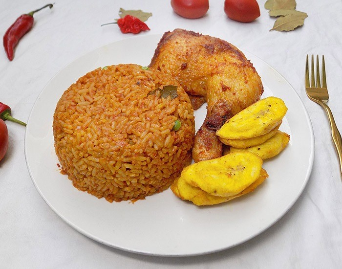
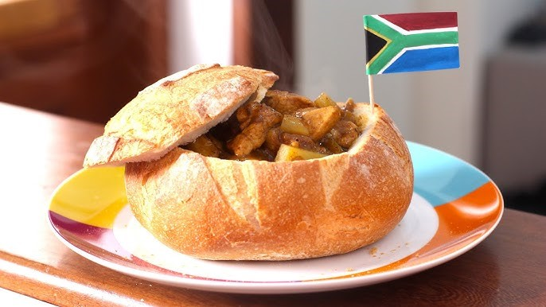
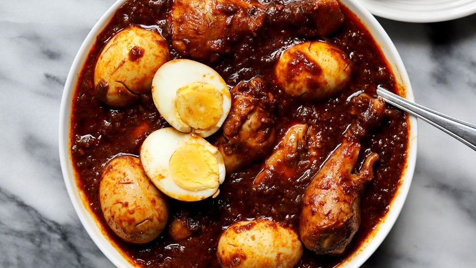
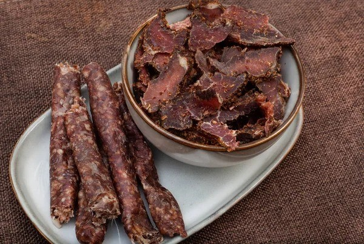

A culinária africana é caracterizada por uma grande variedade de sabores, aromas e tradições, refletindo a diversidade cultural e geográfica do continente. Cada região da África possui pratos únicos, influenciados por ingredientes locais, métodos de preparo tradicionais e a história de cada povo. A culinária africana também sofreu influências externas, principalmente europeias, incorporando temperos como pimenta, alecrim, cravo, louro e canela. A culinária afro-brasileira é uma adaptação de pratos de origem africana aos alimentos cultivados no Brasil. Alguns exemplos de comidas afro-brasileiras são o acarajé, o angu, a feijoada e o vatapá.
Um prato clássico da África Ocidental, especialmente popular na Nigéria e no Gana, feito com arroz cozido em um molho saboroso de tomate e especiarias.
Ingredientes principais:
- Arroz
- Tomates
- Cebola
- Pimentas
- Alho
- Óleo de palma
- Caldo de carne ou peixe
Bunny Chow é um prato típico da culinária sul-africana, consistindo em um pão vazio recheado com curry, geralmente de carne ou vegetais.
História: O Bunny Chow é um prato de origem indiana, adaptado à cultura sul-africana. Ele foi criado em Durban, na década de 1940, pelos indianos que trabalhavam nas fábricas de cana-de-açúcar. Como muitos trabalhadores não tinham tempo para sentar e fazer uma refeição completa, os vendedores começaram a vender curry servido dentro de pães, uma solução prática e acessível. O nome "Bunny" vem de "Bania", um grupo étnico indiano, e "Chow" é uma gíria para "comida". Embora o prato tenha origem nas comunidades indianas, ele se espalhou por toda a África do Sul, e hoje é um prato popular em todo o país.
Principais ingredientes:
- Pão
- Curry
- Molho picante
Um prato típico da Etiópia, onde o injera (um tipo de pão fermentado) é servido com doro wat, um ensopado de frango picante e temperado.
Ingredientes principais:
- Frango
- Berembe
- Injera
- Alho
- Cebola
- Gengibre
Biltong é um snack de carne desidratada e temperada, originário da África do Sul, geralmente feito com carne de boi ou game, cortada em tiras e curada com especiarias.
Ingredientes principais:
- Açúcar
- Coentro
- Vinagre
- Carne
- Sal